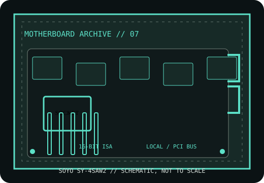

[ HISTORICAL SYSTEM BOARD // IDENTIFIED MODEL ]
SOYO SY-4SAW2
Socket 3 PCI/ISA 486 motherboard, early-to-mid 1990s. This record distinguishes the exact model from related variants and requires revision-matched documentation for service.

IDENTIFY THE PCB: Record model suffix, board revision, chipset markings, BIOS label and date codes before applying any family-level compatibility information.
Model specifications
| Exact model | SOYO SY-4SAW2 |
|---|---|
| Generation / chipset | Socket 3 PCI/ISA 486 motherboard, early-to-mid 1990s; 486 PCI/ISA chipset; use the board’s component markings and SY-4SAW2 manual issue to establish the exact chipset spin. |
| CPU socket / processor | Socket 3 486-family processors, subject to the board’s CPU voltage, bus-clock and multiplier jumper options and BIOS support. |
| RAM technology / capacity | 72-pin SIMM FPM DRAM; up to 128 MB is reported in board catalogs. SIMM size, parity and bank rules must match the manual. |
| Form factor | Baby AT. |
| Bus, slots & I/O | PCI and 16-bit ISA expansion; IDE, floppy, serial, parallel and keyboard ports/headers. Confirm fitted serial/parallel header orientation against the original diagram. |
| Jumpers / BIOS compatibility | BIOS and available 486 CPU support vary by PCB revision. CPU voltage/frequency and memory-bank settings are jumper-dependent; retain original BIOS ROM labels. |
Jumper, BIOS & compatibility notes
SY-4SAW2 is an exact model designation, not a guarantee that every 4SAW2 revision accepts a DX4 or upgrade processor. Verify PCB marking, voltage, jumper chart and BIOS version.
BIOS and available 486 CPU support vary by PCB revision. CPU voltage/frequency and memory-bank settings are jumper-dependent; retain original BIOS ROM labels. Matching socket or connector geometry alone does not establish CPU, memory or firmware compatibility.
Safety & preservation
ESD precautions; inspect the battery for leakage and check SIMM sockets, voltage regulator and capacitors. Photograph all shunts before maintenance and verify AT PSU P8/P9 alignment before first power.
Preserve provenance, original labels, jumpers and test conditions. Photograph the board before repair; avoid aggressive cleaning or desoldering until corrosion and component risks are documented.
Manufacturer and archive manuals
- SOYO SY-4SAW2 manual archive — The Retro WebArchived model record with documentation links; identify the board revision before relying on family data.
- SOYO main-board manuals and drivers collection — Internet ArchiveArchived SOYO documentation CD image; confirm that its manual is for SY-4SAW2 before applying settings.
Archived copies may cover another board revision. Compare manual diagrams and revision identifiers with the physical PCB; do not flash firmware or set voltage jumpers from a related model's manual.